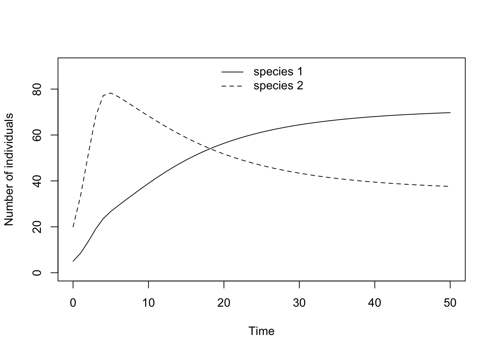
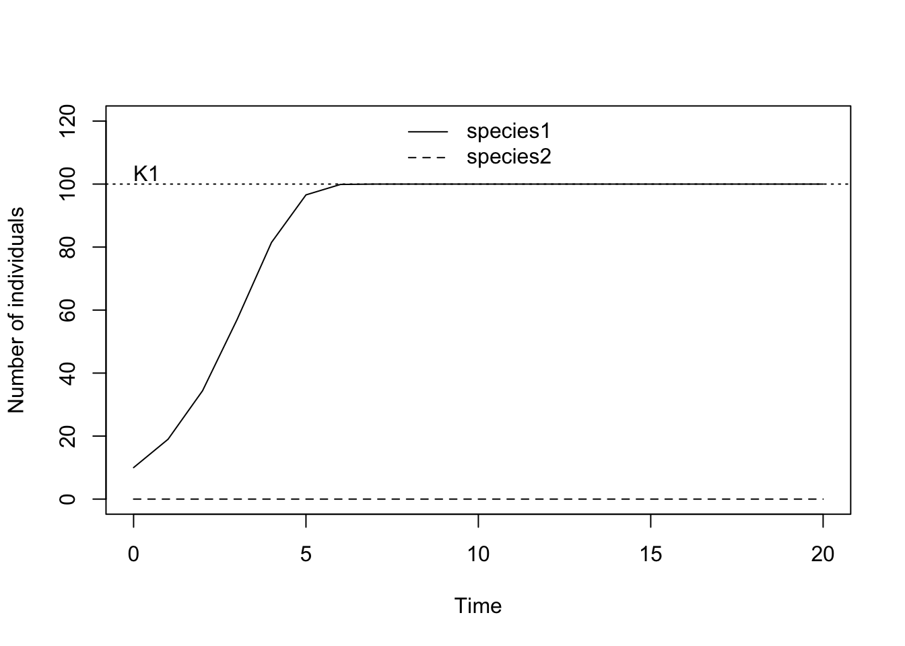
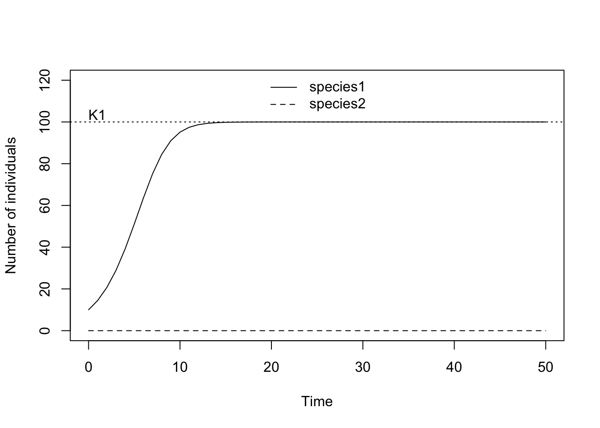

The Lotka-Volterra competition model in discrete time can be written as the following system of two difference equations: \[ \begin{align} N_1(t+1)&=N_1(t)+N_1(t)r_1\bigg(1-\frac{N_1(t)+\alpha N_2(t)}{K_1}\bigg)\\ N_2(t+1)&=N_2(t)+N_2(t)r_2\bigg(1-\frac{N_2(t)+\beta N_1(t)}{K_2}\bigg) \end{align} \]
In this exercise, you will investigate the behavior of the Lotka-Volterra competition model by iterating this system of equations. To do this, we first define a function that describes how the population size of two competing species one time step in the future depends on their population sizes at the current time step.
LVcomp <- function(N, r1, r2, K1, K2, alpha, beta) {
N1.t1 <- N[1] + r1 * N[1] * (1 - (N[1] + alpha * N[2])/K1)
N2.t1 <- N[2] + r2 * N[2] * (1 - (N[2] + beta * N[1])/K2)
c(N1.t1, N2.t1)
}In the next code-block, all parameter values and the initial population size vector N.0 specifying the initial densities for the two species are determined.
r1 <- .9 # intrinsic growth rate of species 1
r2 <- .9 # intrinsic growth rate of species 2
K1 <- 100 # carrying capacity of species 1
K2 <- 100 # carrying capacity of species 2
alpha <- 0.8 # competitive effect of species 2 on species 1
beta <- 0.9 # competitive effect of species 1 on species 2
N0 <- c(5, 20) # vector of initial population sizes, N1(0) and N2(0)
t <- 50 # number of time steps the simulation should runThe next piece of code produces the data. EACH TIME YOU CHANGE A PARAMETER VALUE YOU HAVE TO EVALUATE THE CODE FROM HER ONWARDS IN ORDER TO THE SEE THE CORRESPONDING RESULT.
N <- matrix(NA, nrow = t + 1, ncol = 2) # defines a matrix with two columns and t+1 rows in which the population vectors of the time series will be stored
N[1, ] <- N0 # enters the initial population vector into the first row of this matrix
for (i in 1:t) N[i + 1, ] <- LVcomp(N[i, ], r1, r2, K1, K2, alpha, beta) # this for-loop interates the population dynamics t-timesFinally, let us plot the time series.
matplot(0:t, N, type = "l", lty = 1:2, col = 1, ylim = c(0, 90), ylab="Number of individuals", xlab="Time")
legend("top", c(expression("species 1 "), expression("species 2 ")), lty = 1:2, bty = "n")
Before we actually look at competition between two species let us go back one step. We can use the above code to also investigate the population dynamics of a single species that growths according to logistic growth in discrete time. Recall the lecture about the discrete time logistic model. All that we have to do for that is to set the initial population size of one species, say species 2, equal to zero, that is \(N_2(t=0)=0\). This works because in a population without imigration and emigration, a species that is not present at the beginning will never be present and the model behaves exactly as a single species model.
r1 <- 1 # intrinsic growth rate of species 1
r2 <- 1.5 # intrinsic growth rate of species 2
K1 <- 100 # carrying capacity of species 1
K2 <- 100 # carrying capacity of species 2
alpha <- 0.8 # competitive effect of species 2 on species 1
beta <- 0.9 # competitive effect of species 1 on species 2
N0 <- c(10, 0) # vector of initial population sizes where N2(t=0)=0
t <- 20 # number of time steps the simulation should runHere, you can see the population dynamics as resulting from the above parameter values. I also added a horizontal line indicating the value of the carrying capacity of species 1.
N <- matrix(NA, nrow = t + 1, ncol = 2) # defines a matrix in which the population vectors of the time series will be stored
N[1, ] <- N0 # enters the initial population vector as a column into this matrix
for (i in 1:t) N[i + 1, ] <- LVcomp(N[i, ], r1, r2, K1, K2, alpha, beta) # this for-loop interates the population dynamics t-times
matplot(0:t, N, type = "l", col = 1, ylim = c(0, 120), ylab="Number of individuals", xlab="Time")
abline(h = K1, lty = 3) # plots a line indicating the carrying capacity of species 1
text(0, K1+1, "K1", adj = c(0, 0))
legend("top", c(expression("species1 "), expression("species2")), lty = 1:2, bty = "n")
Vary the intrinsic growth rate r1 to investigate the effect is has on the population dynamics. For example, you could try the values r1=0.5, 0.9, 1.5, 1.9, 2.1, 2.4, 2.5, 2.6. What do you observe? Feel free to choose additional values to complete your understanding.
Does the behavior you observe change when you alter (i) the value of the carrying capacity K or (ii) the initial population size at time zero?
r1 <- 0.5 # intrinsic growth rate of species 1 is now increased
t <- 50
N <- matrix(NA, nrow = t + 1, ncol = 2) # defines a matrix in which the population vectors of the time series will be stored
N[1, ] <- N0 # enters the initial population vector as a column into this matrix
for (i in 1:t) N[i + 1, ] <- LVcomp(N[i, ], r1, r2, K1, K2, alpha, beta) # this for-loop interates the population dynamics t-times
N.r.0p5 <- N # here I assign the matrix that contains the data for the new r-value to a new object, called N.r.0p5. When I plot the data with the following command I have to change the name of the matrix there accordingly.
matplot(0:t, N.r.0p5, type = "l", col = 1, ylim = c(0, 120), ylab="Number of individuals", xlab="Time")
abline(h = K1, lty = 3) # plots a line indicating the carrying capacity of species 1
text(0, K1+1, "K1", adj = c(0, 0))
legend("top", c(expression("species1 "), expression("species2")), lty = 1:2, bty = "n")
In the above code, we assigned the matrix that contains the data for the new r-value to a new object, called N.r.0p5 (reminding us that the r-value equals 0.5 in this run). When we plot the data we have to change the name of the matrix in the plotting command accordingly. In this way, it is possible to always evaluate the same piece of code after a parameter value has been changed but simultaneously keeping the results since we have saved them each time to a new object.
In order to properly investigate the competion between two species both need to have a non-zero density at t=0.
r1 <- 1 # intrinsic growth rate of species 1
r2 <- 1.5 # intrinsic growth rate of species 2
K1 <- 100 # carrying capacity of species 1
K2 <- 100 # carrying capacity of species 2
alpha <- 0.8 # competitive effect of species 2 on species 1
beta <- 0.9 # competitive effect of species 1 on species 2
N0 <- c(10, 5) # vector of initial population sizes, N1(0) and N2(0)
t <- 30 # number of time steps the simulation should runFor the remainder of this exercise, investigate the effect of the various parameters on the outcome of competition between two species. Specifically, investigate the following questions.
K1=K2, and that the intrinsic growth rates are relatively small, say, r1, r2 <1. Under this scenario, look at the following cases: \[
\begin{align}
\mathrm{i)\,\,} & \alpha<1<\beta\\
\mathrm{ii)\,\,} & \alpha>1>\beta\\
\mathrm{iii)\,\,} & 1<\alpha, \beta\\
\mathrm{iv)\,\,} & \alpha, \beta<1
\end{align}
\]Allow the two carrying capacities to differ from each other, for instance, K1 < K2. Does this alter your previous results? If yes, how?
The fact that the single-species logistic equation allows for overshooting and complicated population dynamical cycles when r>2 carries over to the LV-competition model in discrete time (note, that this is not possible in the continuous time versions of both these models). Investigate this possibility for the special case that the intrinsic growth rates and carrying capacities of both species are equal to each other, r1 = r2 and and K1 = K2. What happens if both growth rates are close to 2 but slightly less and what happens if you increase both growth rates slightly above 2? You could combine this investigation with the different configurations that the competition competition coefficients can take as listed under (1).